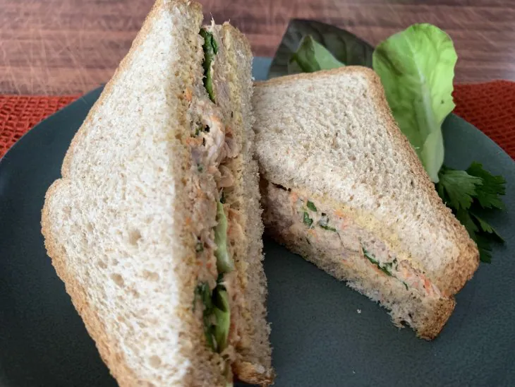

ESSA É A RECEITA PARA O SANDUICHE MAIS GOSTOSO DO MUNDO

SANDUICHE NATURALZIN
ESSES SÃO OS INGREDIENTES NECESSARIOS
lata de atum escorrida
(atum em água)
1 cenoura pequena ralada
2 colheres de sopa de salsinha picada
1 colher de café de tempero completo
(ou sal e pimenta)
1 colher de sopa de mostarda
4 colheres de sopa de maionese light
8 fatias de pão integral de grão
Folhas de alface a gosto
MODO DE PREPARO
Reúna todos os ingredientes;
Em um recipiente, coloque todos os ingredientes
(menos o pão e a alface)
e misture tudo
(caso queira o recheio mais cremoso, é só colocar mais maionese)
;
Separe as fatias de pão, forre cada com folhas de alface e acrescente o recheio;
Feche os sanduíches e sirva.
AGORA É SÓ VOCÊ SE MARAVILHAR COM ESSE DELICIOSO SANDUBA